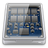
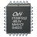

SSD
 Diese Artikelserie beschreibt die Besonderheiten beim Einsatz eines Solid State Drive (meist SSD genannt). Neben allgemeinen Informationen werden Begriffe erklärt, es wird auf TRIM, Secure Erase sowie Grundlagen zur Inbetriebnahme einer SSD eingegangen. Des Weiteren werden Geschwindigkeitstests, das Alignment, die verschiedenen Scheduler sowie die Auslagerung behandelt.
Nutzer, die sich nicht so ausführlich mit der Materie beschäftigen möchten, sollten sich jedoch in jedem Falle den Artikel Alignment durchlesen. Ein korrektes Alignment (Ausrichtung) bringt mit einfachen Mitteln einen überproportionalen Geschwindigkeitszuwachs. Dies sollte auch der erste Ansatz bei vermeintlich langsamen und lahmenden SSD sein.
Hinweis:
Alle auf den nachfolgenden Seiten gegebenen Hinweise sind optional! Die Artikel sollen lediglich aufzeigen, was man alles machen kann. Die Hinweise und Befehle können, müssen das System und die SSD aber nicht schneller machen. Falsch angewendet oder bei falscher Konfiguration können die Hinweise auch das Gegenteil bewirken und im schlimmsten Falle das System unbenutzbar werden lassen. Es hilft in jedem Fall, genau zu wissen, welche Hardware man einsetzt und aktuelle Backups des Systems sowie wichtiger Daten zu besitzen.
| Artikelserie Solid State Drive (SSD) | |
 Begriffsdefinitionen | Häufig benutzte Begriffe kurz zusammengefasst. Unter anderem werden die Begriffe Auslagerungsspeicher, Defragmentierung, Garbage Collection, Löschen, Spare Area, SLC und MLC, TRIM und Wear Levelling erklärt. |
 Grundlagen | Dieser Artikel behandelt die Grundlagen, die für den Betrieb einer SSD erfüllt sein müssen. Dazu gehören einerseits die Einstellungen im BIOS, aber auch Aktualisierungen der Firmware. |
Geschwindigkeitstests | Unersetzlich zum Testen der geänderten Einstellungen sind Performancetests der SSD. Mit Hilfe dieser lässt sich schnell und einfach herausfinden, ob eine Einstellung etwas zum Guten oder Schlechten verändert hat. |
Alignment | Bei der Partitionierung bringt ein korrektes Ausrichten („Alignment“) der Partitionen respektive der Dateisysteme deutliche Performance-Vorteile. Diese Maßnahme bringt den mit Abstand größten Geschwindigkeitszuwachs und sollte in jedem Falle durchgeführt werden. Wie man dabei vorgeht, erklärt der Artikel. |
|  Auslagerung | Überlegungen und Vorgehensweise zur Auslagerung von Dateien beinhaltet dieser Artikel. Aus Geschwindigkeits- und Haltbarkeitsgründen optimiert man die Schreibzugriffe auf die SSD. Programme nutzen dann den RAM-Speicher und/oder andere Festplatten des Systems. |
 Scheduler | Es gibt verschiedene Bootoptionen, die man beim PC-Start dem Kernel übergeben kann. Beim Einsatz von SSD kann man ebenfalls einige dieser Optionen nutzen und so die zeitliche Abfolge („Scheduling“) von Lese- und Schreibaufträgen an Festplatten und andere Speichergeräte beeinflussen. |
Secure-Erase | Um eine SSD in den Ursprungszustand („Factory Default“) zurückzuversetzen, nutzt man Secure-Erase, was alle Blöcke der SSD vom Controller löscht und so die Performance der SSD steigert. Dies kann man ebenfalls machen, wenn man das Gefühl hat, dass die SSD mit der Zeit langsamer wird. |
 TRIM | TRIM ist ein wichtiger Befehl zur Markierung ungenutzter/ungültiger Datenblöcke auf Speichermedien. Der TRIM-Befehl teilt dem Laufwerk beim Löschen von Dateien mit, dass es die davon betroffenen Blöcke als ungültig markieren kann, anstelle deren Daten weiter vorzuhalten. |
Verschlüsselung | Beim Thema Verschlüsselung von SSD respektive deren Inhalt ergeben sich ebenfalls einige Besonderheiten, die dieser Artikel beleuchtet. Eine Komplettverschlüsselung mit schwacher CPU bremst eine SSD relativ stark ab. Eine Teilverschlüsselung von einzelnen Partitionen, Ordnern oder des Homeverzeichnisses ist hier vorzuziehen. |

Links¶
Ikhaya-Artikel: SSD (Solid State Drive) – Nun auch im ubuntuusers-Wiki
Bericht auf golem.de
 zu einem 18-monatigen Langzeittest von SSDs
zu einem 18-monatigen Langzeittest von SSDs
- Erstellt mit Inyoka
-
 2004 – 2017 ubuntuusers.de • Einige Rechte vorbehalten
2004 – 2017 ubuntuusers.de • Einige Rechte vorbehalten
Lizenz • Kontakt • Datenschutz • Impressum • Serverstatus -
Serverhousing gespendet von